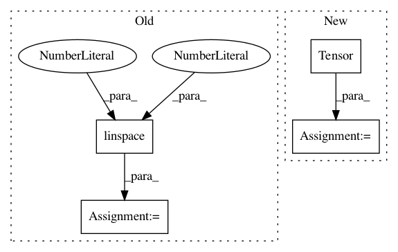

fc9e5824ad7bd3094f5012dc6fc3d2348481a2f4,implementations/bicyclegan/bicyclegan.py,,sample_images,#Any#,112
Before Change
real_A = img_A.view(1, *img_A.shape).repeat(8, 1, 1, 1)
real_A = Variable(real_A.type(Tensor))
// Get interpolated noise [-1, 1]
sampled_z = np.repeat(np.linspace(-1, 1, 8)[:, np.newaxis], opt.latent_dim, 1)
sampled_z = Variable(Tensor(sampled_z))
// Generator samples
fake_B = generator(real_A, sampled_z)
// Concatenate samples horisontally
fake_B = torch.cat([x for x in fake_B.data.cpu()], -1)
After Change
real_A = img_A.view(1, *img_A.shape).repeat(opt.latent_dim, 1, 1, 1)
real_A = Variable(real_A.type(Tensor))
// Sample latent representations
sampled_z = Variable(Tensor(np.random.normal(0, 1, (opt.latent_dim, opt.latent_dim))))
// Generate samples
fake_B = generator(real_A, sampled_z)
// Concatenate samples horisontally
fake_B = torch.cat([x for x in fake_B.data.cpu()], -1)
In pattern: SUPERPATTERN
Frequency: 3
Non-data size: 4
Instances
Project Name: eriklindernoren/PyTorch-GAN
Commit Name: fc9e5824ad7bd3094f5012dc6fc3d2348481a2f4
Time: 2019-04-02
Author: eriklindernoren@live.se
File Name: implementations/bicyclegan/bicyclegan.py
Class Name:
Method Name: sample_images
Project Name: cornellius-gp/gpytorch
Commit Name: 59d4a8b3bea3b5969f79b45456c8e594b617ce92
Time: 2017-11-13
Author: gpleiss@gmail.com
File Name: test/lazy/toeplitz_lazy_variable_test.py
Class Name:
Method Name:
Project Name: cornellius-gp/gpytorch
Commit Name: 60a342edc8b501802135df44869353cc8604d838
Time: 2018-01-11
Author: gpleiss@gmail.com
File Name: test/lazy/kronecker_product_lazy_variable_test.py
Class Name:
Method Name: